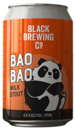

Bao Bao Milk Stout
Black Brewing Co.
Wilyabrup, Western Australia
375mL can
4.5% Alc/Vol
A milk stout with Lactose. Rich chocolate and coffee notes linger on the palate as the smooth sweet lactose glides over the tongue. Brewed with Chocolate, Caramel and Dark Roast malts Bao Bao is a balanced milk stout with no overly cloying sweetness, but rather a balance between bitterness from the rich malts and hops balanced with the hops and lactose.
Generous, bold and wild at heart. That's Black Brewing Co. We make some of Australia's most uncompromising craft beers from our home, on Caves Road, in Wilyabrup, Margaret River.
Our beers tell a refreshing tale of time and place, inspired by the Margaret River region, the Indian Ocean and Western Australia's incredible produce and people. Our aim is to develop and discover new brews all the time, and a sunny day of tastings at our Caves Road brewery and restaurant could lead to many places.